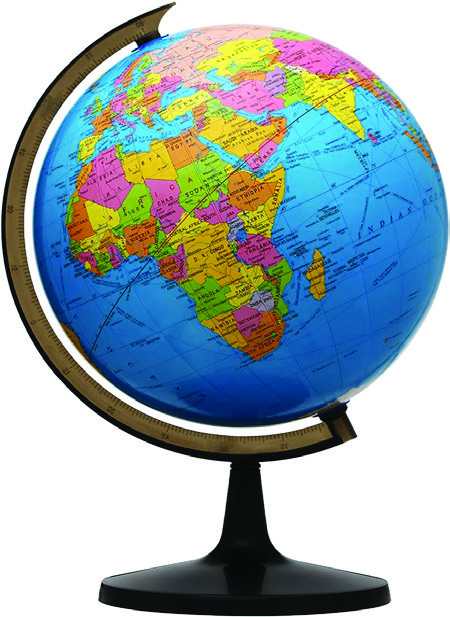
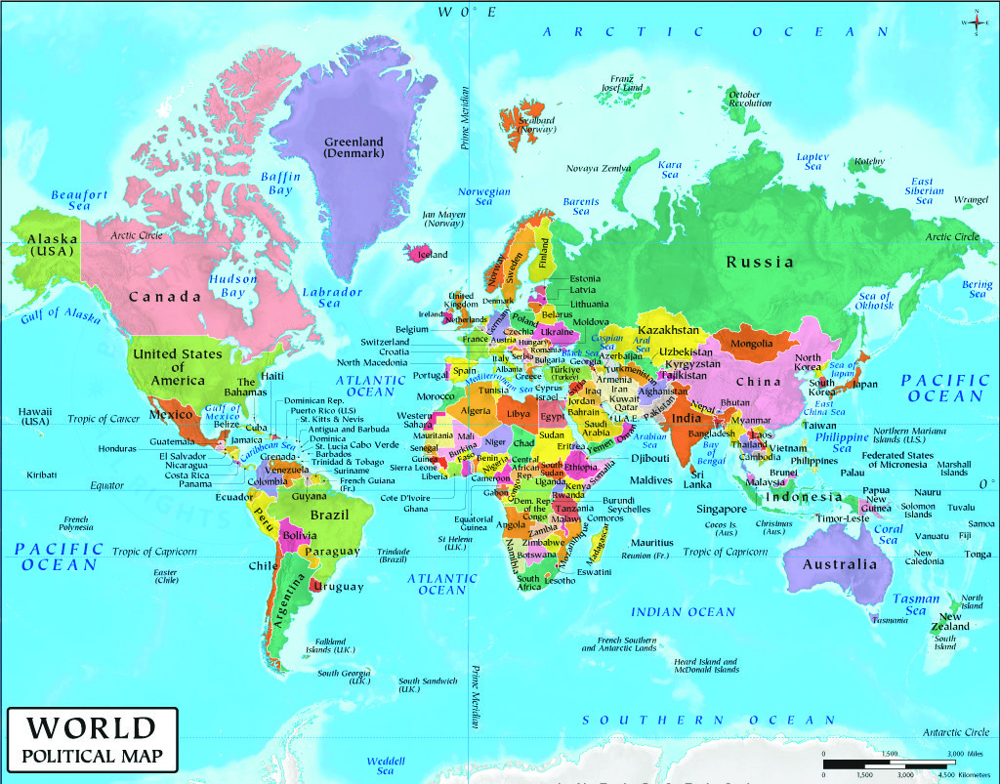
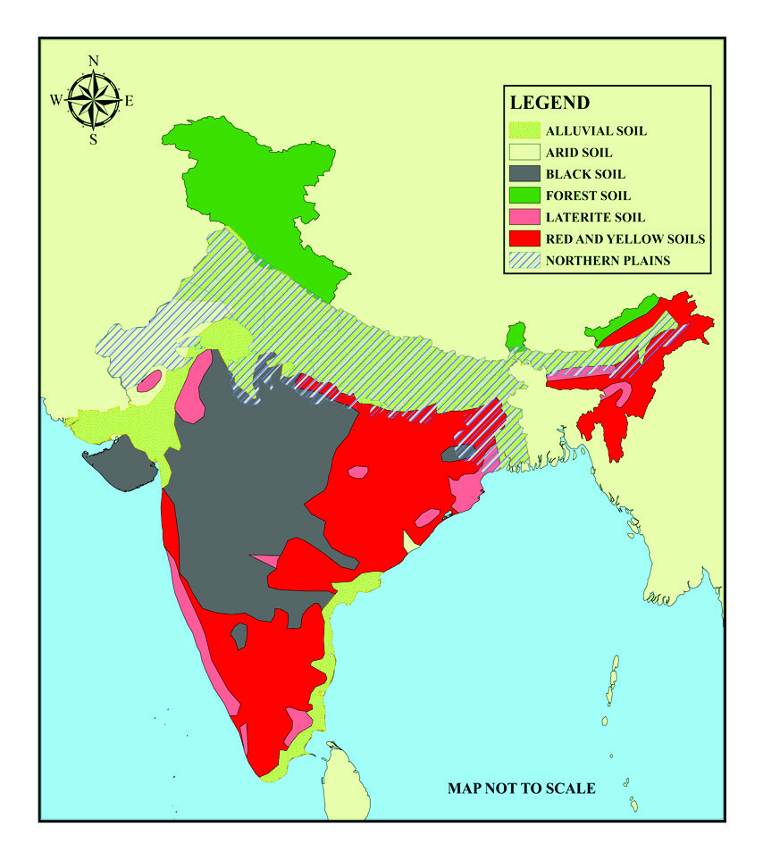
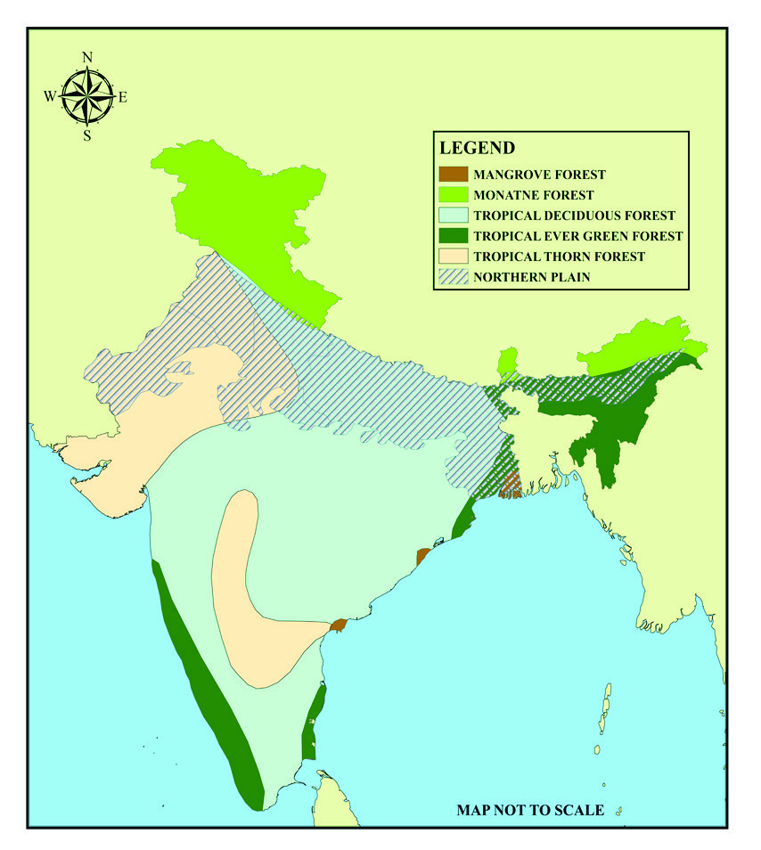
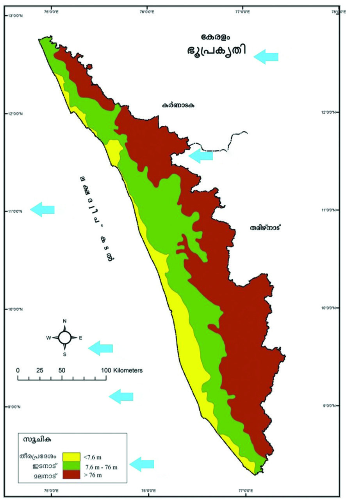
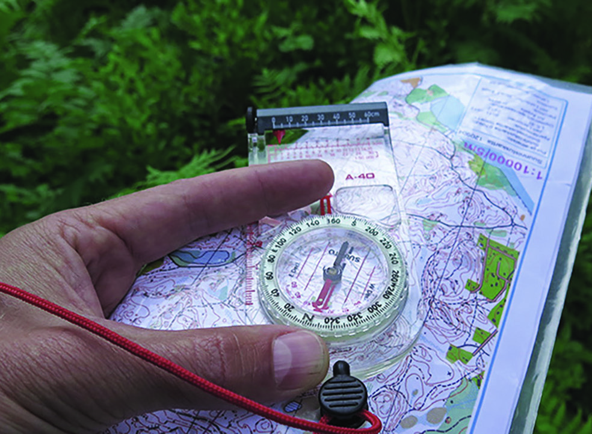
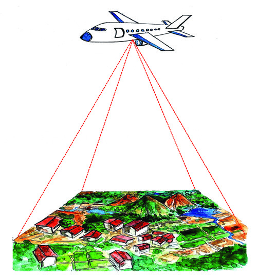

09
ഭൂൂമിിയെ അറിിയാൻ
ഭൂൂപടങ്ങളുംം ആധുുനിികസങ്കേÿതങ്ങളുംം
മീീശപ്പുുലിിമലയിിലേ�ക്കുുള്ള
നമ്മുുടെെ ഇന്നലത്തെെĹ
യാത്ര നല്ല രസമായിിരുന്നു
അല്ലേ� അച്ഛാാ?
ഭൂൂപടങ്ങളും�ം ഗ്ലോøോബുുമൊ�ൊക്കെ�
നിരീക്ഷിിച്ച്് പുതിിയ
സ്ഥലങ്ങൾ കടെĬത്താനുംം�
വിിവരങ്ങൾ ശേ�ഖരിക്കാനുംം�
എന്തുു രസമാണ്്.
അതെ�, വളരെെ
നല്ലൊ�ൊരു
യാത്രയായിിരുന്നു. മൊ�ൊബൈൈൽ
ഫോോണിിലെ� ഡിിജിിറ്റൽ ഭൂൂപടം
വേ�ണ്ടരീതിിയിിൽ പ്രയോ�ോജനപ്പെ�ടുുത്താൻ
കഴിിഞ്ഞതുകൊ�ൊണ്ടാണ്്
നമുക്കവിിടെെ എളുുപ്പത്തി
ിൽ
എത്താനായത്്.
അതെ�, ഭൂൂപടങ്ങൾ ഒരു മികച്ച
വിിവരസ്രോǟോതസ്സാാണ്്, നിത്യജീവിിതത്തിൽ
വിിവിിധ ആവശ്യങ്ങൾക്കായിി നാം വ്യത്യസ്ത
ഭൂൂപടങ്ങൾ ഉപയോ�ോഗിിക്കുുന്നുണ്ട്.
കടലാാസുകളിൽ അച്ചടിിച്ച ഭൂൂപടം മുതൽ
ഡിിജിിറ്റൽ സാങ്കേേÿതിിക വിിദ്യയയിിലൂടെെ
തയ്യാാറാാക്കിയ ഭൂൂപടങ്ങൾ വരെെ നാമിന്ന്
ഉപയോ�ോഗിിക്കുുന്നു.
ഇനി അടുത്ത യാത്ര പ്ലാാൻ
ചെെxയ്യുമ്പോƠോൾ പോ�ോകേ�ണ്ട
സ്ഥലങ്ങളും�ം വഴിികളും�ം
ഭൂൂപടമുുപയോ�ോഗിിച്ച്് മുൻകൂട്ടിി
നിശ്ചയിിച്ചാൽ നമുക്ക്
സമയവുംം� ലാഭിക്കാം യാത്ര
കൂടുതൽ രസകരമാവുകയുംം�
ചെെxയ്യുംം�. അല്ലേ� അച്ഛാാ?
ചിിത്രംം 9.1
Page 20
Page 21



ഒരു കുട്ടിി തന്റെെź അച്ഛനോ�ോടൊ�ൊപ്പംം നടത്തിയ യാത്രയെ�ക്കുുറിച്ചുള്ള സംഭാഷണം വായിിച്ചല്ലോ�ോ
.
ഭൂൂപടങ്ങൾ അവരുുടെെ യാത്രയിിൽ എത്രത്തോĹോളംം സഹാായകരമായിിരുന്നുവെ�ന്ന്് കണ്ടില്ലേ�.
വാഹനങ്ങളിലുംം� മൊ�ൊബൈൈൽ ഫോോണിിലുമൊ�ൊക്കെ�യുുള്ള ഡിിജിിറ്റൽ ഭൂൂപടങ്ങൾ നിങ്ങൾ
കണ്ടിട്ടുണ്ടാവുംം�. യാത്രകളിൽ ഇത്തരം ഭൂൂപടങ്ങൾ ഉപയോ�ോഗിിക്കുുന്നത് നിങ്ങൾ ശ്രദ്ധിിച്ചി
ട്ടിില്ലേ�. സ്കൂൂളിലെ� സാമൂഹ്യശാസ്ത്ര ലാബിൽ പ്രദർശിപ്പിച്ചിട്ടുള്ള വിിവിിധതരംം ഭൂൂപടങ്ങളും�ം
നിങ്ങൾക്ക് പരിചിതമാാണ്്.
ഏതൊ�ൊക്കെ� സന്ദർഭങ്ങളിലാണ്് നാം ഭൂൂപടങ്ങൾ പ്രയോ�ോജനപ്പെ�ടുുത്തുന്നത്. ഒന്ന് എഴുതിി
നോ�ോക്കൂൂ
l ഒരു സ്ഥലത്തിന്റെെź സ്ഥാനം മനസ്സിലാക്കുുന്നതിിന്
l ലക്ഷ്യയസ്ഥാനത്തേേĹക്കുുള്ള വഴിികൾ ശാസ്ത്രീയമാായിി കടെĬത്തുന്നതിിന്
l ഭൂൂപ്രകൃതിി മനസ്സിലാക്കുുന്നതിിന്
l
ഭൂൂപടത്തിന്റെെźയുംം� ഗ്ലോøോബിിന്റെെźയുംം� ചിത്രങ്ങളാണ്് ചുവടെെ നൽകിയിിട്ടുള്ളത്.
അവ നിരീക്ഷിിച്ച്്, നൽകിയിിട്ടുള്ള സൂചനകളുുടെെ അടിസ്ഥാനത്തിൽ അവ
തമ്മിലുള്ള വ്യത്യാാ�സങ്ങൾ കടെĬത്തൂ. സാമൂഹ്യശാസ്ത്ര ലാബിലുള്ള ഗ്ലോøോബുംം�
ഭൂൂപടവുംം� കൂടി ഇതിിനായിി പ്രയോ�ോജനപ്പെ�ടുുത്തുമല്ലോ�ോ.
ചിിത്രങ്ങൾ 9.2
സൂചനകൾ:
l ആകൃതിി
l അക്ഷാംശ-രേ�ഖാംശ രേ�ഖകൾ
l ഉപയോ�ോഗംം
133
ഭൂൂമിിയെ അറിിയാൻ ഭൂൂപടങ്ങളുംം ആധുുനിികസങ്കേÿതങ്ങളുംം
Page 22

ഗ്ലോøോബുുകളുുടെെയുംം� ഭൂൂപടങ്ങളുുടെെയുംം� ചില പ്രധാന സവിിശേ�ഷതകളാണ്്
ചുവടെെ നൽകിയിിട്ടുള്ളത്. അവ ഗ്ലോøോബുുകളുുടെെ സവിിശേ�ഷതകൾ, ഭൂൂപടങ്ങ
ളുുടെെ സവിിശേ�ഷതകൾ എന്നിങ്ങനെ� തരംംതിിരിച്ച്് പട്ടിികപ്പെ�ടുുത്തൂ.
l ഭൂൂമിയുടെെ യഥാാർഥ മാതൃക
l ഭൂൂമിയുടെെ ദ്വി�മാാന ചിത്രീകരണം
l ഭൂൂമിയുടെെ ഗോ�ോളാാകൃതിിയിിലുള്ള ചിത്രീകരണം
l ഭൂൂമിയെ� ഭാഗിികമായോ�ോ പൂർണ്ണമായോ�ോ ഒരു പരന്ന പ്രതലത്തിൽ ചിത്രീകരിക്കുുന്നത്
l ഭൂൂമിയെ� പൂർണ്ണമായുംം� ചിത്രീകരിക്കുുന്നതിിനാൽ ഭൂൂമിയെ�പ്പറ്റിിയുള്ള ഒരു സമഗ്രമായ
ദൃശ്യബോ�ോധംം പ്രദാനം ചെെxയ്യുന്നു.
l രേ�ഖാംശ രേ�ഖകളും�ം അക്ഷാംശ രേ�ഖകളും�ം നേ�ർരേ�ഖകളായിി ചിത്രീകരിക്കുുന്നു.
l രേ�ഖാംശ രേ�ഖകൾ അർധ വൃത്തങ്ങളായുംം� അക്ഷാംശ രേ�ഖകൾ കേ�ന്ദ്രീീകൃത വൃത്തങ്ങളായുംം�
ചിത്രീകരിക്കുുന്നു.
l ഒരു നിശ്ചിത പ്രദേ�ശത്തെെĹപ്പറ്റിിയുള്ള വിിവരങ്ങൾ ശേ�ഖരിക്കുുന്നതിിനുംം� യാത്രയ്ക്കാായിി
വഴിികൾ ആസൂത്രണം ചെെxയ്യുന്നതിിനുംം� ഏറെെ പ്രയോ�ോജനകരം
l
ഇനി പറയൂൂ എന്താണ്് ഭൂൂപടങ്ങൾ? ഭൂൂമിയെ� പൂർണ്ണമായോ�ോ ഭാഗിികമായോ�ോ ഒരു പരന്ന
പ്രതലത്തിൽ ചിത്രീകരിച്ചാണ്് ഭൂൂപടങ്ങൾ നിർമ്മിക്കുുന്നത്. ഇത്തരത്തിൽ ചിത്രീകരിച്ചിട്ടുള്ള
പരന്ന പ്രതലങ്ങളാണ്് ഭൂൂപടങ്ങൾ.
ആവശ്യയങ്ങൾ വ്യത്യസ്തംം - ഭൂൂപടങ്ങളുംം വ്യത്യസ്�തം
എന്തെ�ല്ലാം� ആവശ്യങ്ങൾക്കായാണ്് നാം ഭൂൂപടങ്ങൾ ഉപയോ�ോഗിിക്കുുന്നതെ�ന്ന്് നിങ്ങൾ
കടെĬത്തിയിില്ലേ�? ഒരേ� ഭൂൂപടം തന്നെ� നമുക്ക് എല്ലാ ആവശ്യങ്ങൾക്കുുമായിി ഉപയോ�ോഗിി
ക്കുുവാനാകുമോ�ോ? നമ്മുുടെെ ആവശ്യങ്ങൾ വ്യത്യസ്തമാണ്്. അതിിനനുസൃതമാായിി ഭൂൂപടങ്ങളും�ം
വ്യത്യസ്തമായിിരിക്കുംം�. ഭൂൂപടങ്ങളെ� പ്രധാനമായുംം� ചുവടെെ നൽകിയിിട്ടുള്ള രണ്ട് ഘടകങ്ങ
ളുുടെെ അടിസ്ഥാനത്തിൽ തരംംതിിരിക്കാം.
l ഭൂൂപടങ്ങൾ നിറവേ�റ്റുന്ന ധർമ്മം
l ഭൂൂപടങ്ങൾ തയ്യാാറാാക്കിയിിരിക്കുുന്ന അളവ്് അഥവാാ തോ�ോത്്
134
സാാമൂൂഹ്യയശാാസ്ത്രംം
- ഭാാഗംം 2
VII
Page 23


ഭൂൂപടങ്ങളുുടെെ
ചരിിത്രംം
ഭൂൂപടനിർമ്മാണത്തിന്റെെź ചരിത്രം മനുുഷ്യരാശിയുടെെ ചരിത്രത്തോĹോളംം തന്നെ�
പഴക്കമുുള്ളതാണ്്. ആദിമ ഭൂൂപടങ്ങൾ കല്ലുകളിലുംം� തടിികളിലുംം� കൊ�ൊത്തി
ഉണ്ടാക്കിയിിട്ടുണ്ട് ; മണ്ണിലുംം� മൃഗത്തോĹോലിിലുംം� തുണിയിിലുംം� അവ നിർമ്മിച്ചിട്ടുണ്ട്. അറി
യപ്പെ�ടുുന്നതിിൽ വച്ച്് ഏറ്റവുംം� പഴക്കമുുള്ള ഭൂൂപടം ഏതാണ്ട് ബി സി ഇ 2500-കാല
ഘട്ടങ്ങളിൽ നിർമ്മിക്കപ്പെ�ട്ടിിട്ടുള്ളതാണെ�ന്ന്് കരുതപ്പെ�ടുുന്നു. മെെസൊ�ൊപ്പൊ�ൊട്ടേ�മിിയയിി
ലെ� ഒരു കളിമൺ ഫലകത്തിൽ വരച്ച ഭൂൂപടമാാണത്്. ഭൂൂമി ഉരുണ്ടതാണെ�ന്ന്് രണ്ടാം
നൂറ്റാണ്ടിൽ ജീവിിച്ചിരുന്ന ഗ്രീക്ക് ഭൗമശാാസ് ത്രജ്ഞനായ ടോ�ോളമിി വിിശ്വവസിച്ചിരുന്നു.
അതനുുസരിച്ച്് ഒരു ഭൂൂപടം നിർമ്മിക്കാൻ ടോ�ോളമിി ശ്രമിച്ചിരുന്നു. സി ഇ 1400-കളുുടെെ
അവസാ
ാനത്തിൽ ഒരു അറ്റ്ലസി
ിൽ അച്ചടിിച്ചു വരുുന്നതുവരെെ ടോ�ോളമിിയുടെെ ഭൂൂപട
ങ്ങളെ� കുറിച്ച്് പുറംലോ�ോകത്തിന്
അറിവിില്ലായിിരുന്നു. അതിിനു ശേ�ഷം
അവ കൊ�ൊളംംബസ്
് , കാബട്ട് , മഗെ�ല്ലൻ,
ഡ്രേേĦക്ക് , വെ�സ്്പൂൂചി എന്നീ നാവിി
കർക്ക് ഭൂൂമിശാസ് ത്ര വിിവരങ്ങളുുടെെ
ഉറവിിടമാായിി മാറി. ഇന്നുംം�, ടോ�ോളമിി
നിർമ്മിച്ച ഭൂൂപടത്തിന് ആധുനിക
ഭൂൂപടങ്ങളോ�ോട്്
സാദൃശ്യമുണ്ട് .
ഗ്രീക്ക്, അറബ്
് ഭൂൂമിശാസ്ത്രജ്ഞരാണ്്
ആധുനിക ഭൂൂപട നിർമ്മാണത്തിന്
അടിത്തറ പാകിയത്്. അതിിപുരാത
നകാലം മുതൽക്കേ� ഇന്ത്യയിിലുംം� ഭൂൂപടങ്ങൾ നിർമ്മിക്കാനുള്ള ശ്രമങ്ങൾ നടന്നിരു
ന്നതായിി കരുതപ്പെ�ടുുന്നു.
ചിിത്രംം 9.3
ടോ}ോളമിിയുുടെെ ലോോോകഭൂൂപടം
നിങ്ങളുുടെെ സാമൂഹ്യശാസ്ത്ര ലാബിലെ� ഭൂൂപടങ്ങളുുടെെ തലക്കെ�ട്ടുുകൾ പരിശോ�ോ
ധിച്ച്് അവ ഏതൊ�ൊക്കെ�യെ�ന്ന്് പട്ടിികപ്പെ�ടുുത്തൂ.
l രാഷ്ട്രീീയ ഭൂൂപടം
l ഭൂൂപ്രകൃതിി ഭൂൂപടം
l ഗതാാഗത ഭൂൂപടം
l മണ്ണ്് ഭൂൂപടം
l
ഓരോ�ോ ഭൂൂപടത്തിനുംം� വ്യത്യസ്ത തലക്കെ�ട്ടുുകളാണെ�ന്ന്് ബോ�ോധ്യമായിില്ലേ�? ഓരോ�ോ
ഭൂൂപടവുംം� നിറവേ�റ്റുന്ന ധർമ്മത്തി
ിന്റെെź അടിസ്ഥാനത്തിലാണ്് അവയ്ക്ക് തലക്കെ�ട്ടുുകൾ
നൽകിയിിട്ടുള്ളത്. കേ�രളത്തിന്റെെź രാഷ്ട്രീീയ ഭൂൂപടം പരിശോ�ോധിക്കൂ. കേ�രളത്തിലെ�
ജിില്ലകളുുടെെ വിിവരങ്ങൾ നമുക്ക് അതിിൽനിന്നുംം� കടെĬത്താനാവുന്നില്ലേ�? ഇതു
പോ�ോലെ� ഒരു ഭൂൂഖണ്ഡത്തിന്റെെźയോ�ോ രാജ്യത്തിന്റെെźയോ�ോ സംസ്ഥാനത്തിന്റെെźയോ�ോ രാഷ്ട്രീീയ
ഭൂൂപടങ്ങൾ നിരീക്ഷിിച്ച്് അവ പ്രദാനം ചെെxയ്യുന്ന വിിവരങ്ങൾ പട്ടിികപ്പെ�ടുുത്തിനോ�ോക്കൂൂ.
135
ഭൂൂമിിയെ അറിിയാൻ ഭൂൂപടങ്ങളുംം ആധുുനിികസങ്കേÿതങ്ങളുംം
Page 24


നിങ്ങൾക്കിപ്പോ�ോൾ എന്താണ്് രാഷ്ട്രീീയ ഭൂൂപടങ്ങളുുടെെ ധർമ്മം എന്ന് മനസ്സിലായിില്ലേ�? മണ്ണ്
ഭൂൂപടമാാകട്ടെെ ഒരു പ്രദേ�ശത്തെെĹ വ്യത്യസ്തതരംം മണ്ണിനങ്ങളുുടെെ വിിതരണത്തെെĹ കാണിക്കുുന്നു.
ഒരു പ്രദേ�ശത്തിന്റെെź വ്യത്യസ്തതരംം മണ്ണിനങ്ങളെ�പ്പറ്റിിയുള്ള വിിവരങ്ങൾ പ്രദാനം ചെെxയ്യുക
എന്നതാണ്് മണ്ണ് ഭൂൂപടത്തിന്റെെź ധർമ്മം.
എന്നാൽ ഇനി ഒരു ഭൂൂപ്രകൃതിി ഭൂൂപടത്തിന്റെെź ധർമ്മമെെന്താ
ാണെ�ന്ന്് പറയൂൂ.
ഭൂൂപടത്തിന്റെെź ധർമ്മം അതിിന്റെെź ഉള്ളടക്കവുുമായിി ബന്ധപ്പെ�ട്ടിിരിക്കുുന്നുവെ�ന്ന്് മനസ്സിലായിില്ലേ�?
ഭൂൂപടങ്ങളെ� അവ നിർവഹി
ിക്കുുന്ന ധർമ്മത്തി
ിന്റെെź അടിസ്ഥാനത്തിൽ പൊ�ൊതുുവെ� രണ്ടായിി
തരംംതിിരിക്കാം.
അവയേ�തെ�ല്ലാാമെെന്ന്് നോ�ോക്കൂൂ.
ഭൗതിക
ഭൂൂപടങ്ങൾ
ഭൂൂപ്രകൃതിി, മണ്ണ്, നദികൾ , കാലാവസ്ഥ, നൈൈസർഗിിക സസ്യ
ജാലങ്ങൾ തുടങ്ങിയ പ്രകൃതിിദത്തമായ സവിിശേ�ഷതകൾ
ചിത്രീകരിക്കുുന്ന ഭൂൂപടങ്ങൾ.
സാംസ്കാാരിിക
ഭൂൂപടങ്ങൾ
മനുുഷ്യനിർമ്മിതമാായ സവിിശേ�ഷതകൾ ചിത്രീകരിക്കുുന്ന
ഭൂൂപടങ്ങൾ. ഉദാഹരണം-രാജ്യങ്ങൾ, സംസ്ഥാനങ്ങൾ, ജിില്ലകൾ
തുടങ്ങിയ രാഷ്ട്രീീയ വിിഭാഗങ്ങൾ, റോ�ോഡുുകൾ, റെെയിിൽ പാത
കൾ, തുറമുുഖങ്ങൾ, ജനസംഖ്യാാ�വിിതരണം തുടങ്ങിയവ.
ചുവടെെ ചേേxർത്തിട്ടുള്ള ഭൂൂപടങ്ങളെ� ഭൗതിിക ഭൂൂപടങ്ങളെ�ന്നുംം� സാംസ്കാാരിക
ഭൂൂപടങ്ങളെ�ന്നുംം� വേ�ർതിിരിച്ച്് പട്ടിികപ്പെ�ടുുത്തൂ.
ഭൂൂപ്രകൃതിി ഭൂൂപടം, മണ്ണ് ഭൂൂപടം, കാലാവസ്ഥാ ഭൂൂപടം, നൈൈസർഗിിക സസ്യ
ജാല ഭൂൂപടം, നദീ വ്യവസ്ഥാ ഭൂൂപടം, രാഷ്ട്രീീയ ഭൂൂപടം, ജനസംഖ്യ ഭൂൂപടം,
സാമ്പത്തിക ഭൂൂപടം, ഗതാാഗത ഭൂൂപടം.
വിിവിിധ ഭൗമോ�ോപരിതല സവിിശേ�ഷതകളും�ം അവ ചിത്രീകരിച്ചിട്ടുള്ള ഭൂൂപട
ങ്ങളുുടെെ പേ�രുകളുുമാണ്് എ, ബി എന്നീ കോ�ോളങ്ങളിൽ നൽകിയിിട്ടുള്ളത്.
വരകൾ ഉപയോ�ോഗിിച്ച്് അവയെ� ചേേxരും�ംപടി ചേേxർക്കൂ.
എ
ബിി
l മഴയുുടെെ വിിതരണം
l കാർഷിക ഭൂൂപടം
l വന വിിസ്തൃതിി
l ഗതാാഗത ഭൂൂപടം
l നെ�ൽപ്പാടങ്ങളുുടെെ വിിതരണം
l കാലാവസ്ഥാ ഭൂൂപടം
l റോ�ോഡ്് ശൃംംഖല
l നൈൈസർഗിിക സസ്യജാല ഭൂൂപടം
136
സാാമൂൂഹ്യയശാാസ്ത്രംം
- ഭാാഗംം 2
VII
Page 25



നിങ്ങൾ വ്യത്യസ്�തതരംം ഭൂൂപടങ്ങൾ പരിചയപ്പെ�ട്ടിില്ലേ�? അവയോ�ോരോ�ോന്നുംം� വിിവിിധ ഭൗമോ�ോപ
രിതല സവിിശേ�ഷതകളെ� പ്രത്യേ�േകം ചിത്രീകരിച്ചിട്ടുള്ളവയാാണ്്. എന്തുുകൊ�ൊണ്ടാണിങ്ങനെ�
വ്യത്യസ്�ത ഭൗമോ�ോപരിതല സവിിശേ�ഷതകൾ ചിത്രീകരിക്കുുന്നതിിനായിി പ്രത്യേ�േകം ഭൂൂപട
ങ്ങൾ ഉപയോ�ോഗിിക്കുുന്നതെ�ന്ന്് അറിയാമോ�ോ? ചുവടെെ ചേേxർത്തിട്ടുള്ള ഭൂൂപടങ്ങൾ നിരീക്ഷിിക്കൂ.
ഒന്നാമത്തെെĹ ഭൂൂപടത്തിൽ ഇന്ത്യയിിലെ� മണ്ണിനങ്ങളുുടെെ വിിതരണവുംം� രണ്ടാമത്തേേĹതിിൽ ഇന്ത്യ
യിിലെ� നൈൈസർഗിിക സസ്യജാലങ്ങളുുടെെ വിിതരണവുംം� ചിത്രീകരിച്ചിരിക്കുുന്നു. ഈ രണ്ട്
ഭൂൂപടങ്ങളിലുള്ള വിിവരങ്ങളും�ം ഒരേ� ഭൂൂപടത്തിൽ ചിത്രീകരിക്കുുകയാണെ�ന്ന്് സങ്കല്പിിക്കൂ.
എങ്കിൽ എന്താണ്് സംഭവിിക്കുുക? രണ്ട് ഭൂൂപടങ്ങളിലേ�യുംം� വിിവരങ്ങൾ കൂടിക്കലർന്ന് നമുക്ക്
ഏറെെ ആശയക്കുുഴപ്പങ്ങൾ സൃഷ്ടിിക്കുുകയുംം� വിിവര ശേ�ഖരണം കൂടുതൽ സങ്കീർണമാാകു
കയുംം� ചെെxയ്യുംം�. അതുകൊ�ൊണ്ടാണ്് പ്രധാന ഭൗമോ�ോപരിതല സവിിശേ�ഷതകൾ ഓരോ�ോന്നുംം�
പ്രത്യേ�േക ഭൂൂപടങ്ങളിലായിി ചിത്രീകരിക്കുുന്നത്. ഇത്തരത്തിൽ ഒരു പ്രത്യേ�േക വിിഷയം മാത്രം
പ്രതിിപാദിക്കുുന്ന ഭൂൂപടങ്ങളെ� നാം വിിഷയാധിഷ്ഠിിത ഭൂൂപടങ്ങൾ എന്ന് വിിളിക്കുുന്നു.
ഒരു അറ്റ്ലസ്
് പരിശോ�ോധിച്ച്് ഇത്തരത്തിലുള്ള ഭൂൂപടങ്ങൾ കടെĬത്തി അവ
യുടെെ സവിിശേ�ഷതകൾ തിിരിച്ചറിിയൂ.
ഇനി ഭൂൂപടങ്ങൾ തയ്യാാറാാക്കിയിിരിക്കുുന്ന അളവിിന്റെെź അടിസ്ഥാനത്തിൽ ഭൂൂപടങ്ങളെ� നമു
ക്കെ�ങ്ങനെ� വർഗീകരിക്കാമെെന്ന്് നോ�ോക്കാം. എല്ലാ ഭൂൂപടങ്ങളും�ം ഒരു നിശ്ചിത അളവ്് അഥവാാ
തോ�ോത്് അടിസ്ഥാനമാക്കിയാണ്് നിർമ്മിച്ചിരിക്കുുന്നത്. എന്താണ്് ഭൂൂപടങ്ങൾ തയ്യാാറാാക്കുു
ന്നതിിനായുള്ള തോ�ോത്്? നിങ്ങളുുടെെ ക്ലാാസ് മുറിയുടെെ രൂപരേ�ഖ ഒരു നോ�ോട്ട്് ബുുക്കിൽ വരച്ച്്
നോ�ോക്കൂൂ. നിങ്ങൾ ഓരോ�ോരുത്തരും�ം വരച്ച രൂപരേ�ഖകൾ ഒരുപോ�ോലെ�യാാണോ�ോ? അല്ലായെ�ന്ന്്
ബോ�ോധ്യമായിില്ലേ�? എന്തുുകൊ�ൊണ്ടാണിങ്ങനെ� സംഭവിിച്ചത്്? കാരണം നിങ്ങൾ പൊ�ൊതുുവായ
ചിിത്രങ്ങൾ 9.4
137
ഭൂൂമിിയെ അറിിയാൻ ഭൂൂപടങ്ങളുംം ആധുുനിികസങ്കേÿതങ്ങളുംം
Page 26

ഒരു അളവ്് അഥവാാ തോ�ോത്് അടിസ്ഥാന
മാക്കിയല്ല രൂപരേ�ഖകൾ തയ്യാാറാാക്കിയത്്.
കൃത്യമായ അളവിിൽ ക്ലാാസ് മുറിയുടെെ
യഥാാർഥ വിിസ്തൃതിിയിിൽ ഒരു രൂപരേ�ഖ വര
യ്ക്കുക സാധ്യമാണോ�ോ? തീർച്ചയാായുംം� അല്ല.
കാരണം ഒരു ക്ലാാസ് മുറിയുടെെ യഥാാർഥ
വിിസ്തൃതിിയിിൽ ഒരു രൂപരേ�ഖ വരയ്ക്കണമെെ
ങ്കിൽ നമുക്ക് അത്രതന്നെ� വിിസ് തൃതിിയുള്ള
ഒരു കടലാാസോ�ോ നോ�ോട്ടുുബുുക്കോ�ോ വേ�ണംം.
അപ്പോ�ോൾ ഒരു പ്രദേ�ശത്തിന്റെെź കാര്യമെെ
ടുത്താലോ�ോ. ഒരു പ്രദേ�ശത്തിന്റെെź ഭൂൂപടം
കൃത്യമായ അളവിിലുംം� യഥാാർഥ വിിസ്തൃതിി
യിിലുംം� തയ്യാാറാാക്കുുന്നതിിന് ആ പ്രദേ�ശത്തി
ന്റെെź അത്രതന്നെ� വലിിപ്പമുുള്ള ഒരു പ്രത
ലം അഥവാാ ഒരു കടലാാസ് ആവശ്യമാണ്്.
ഇത് സാധ്യമായ ഒരു കാര്യമാണോ�ോ? അപ്പോ�ോൾ കൃത്യമായ അളവുുകളിൽ ഒരു ഭൂൂപടമോ�ോ
രൂപരേ�ഖയോ�ോ നമുക്കെ�ങ്ങനെ� തയ്യാാറാാക്കാനാകുംം�. ഇവിിടെെയാണ്് നാം തോ�ോത്് ഉപയോ�ോഗിി
ക്കുുന്നത്.
ക്ലാാസ് മുറിയുടെെ രൂപരേ�ഖ ഇനി ഒരു തോ�ോതിിന്റെെź അടിസ്ഥാനത്തിൽ തയ്യാാ
റാാക്കി നോ�ോക്കാം.
നിങ്ങളുുടെെ ക്ലാാസിന്റെെź വീതിി 5 മീീറ്ററും�ം, നീളംം 10 മീീറ്ററുമാണെ�ന്ന്് കരുതുക. ക്ലാാസിലെ�
ഒരു മീീറ്റർ നാം ഒരു സെ�ന്റിമീീറ്ററാായിി കണക്കാക്കി നോ�ോട്ടുുബുുക്കിൽ വരക്കുുന്നുവെ�ന്ന്്
കരുതുക. അങ്ങനെ�യെ�ങ്കിൽ ക്ലാാസ് മുറിയുടെെ രൂപരേ�ഖ നാം നോ�ോട്ട്് ബുുക്കിൽ വര
യ്ക്കുമ്പോƠോൾ 5 സെ�ന്റീമീീറ്റർ വീതിിയുംം� 10 സെ�ന്റീമീീറ്റർ നീളവുുമുള്ള ഒരു ദീർഘചതുുരം
നമുക്ക് വരയ്ക്കാാനാകുന്നില്ലേ�. അതുപോ�ോലെ� ബഞ്ചുുകളുുടെെയുംം� മേ�ശയുടെെയുംം� നീളവുംം�
വീതിിയുമൊ�ൊക്കെ� അളന്ന് ക്ലാാസ് മുറിയിിലെ� ഒരു മീീറ്റർ, രൂപരേ�ഖയിിൽ ഒരു സെ�ന്റീമീീറ്റർ
എന്ന അളവിിൽ നോ�ോട്ട്് ബുുക്കിൽ വരയ്ക്കൂ. വടക്ക് ദിശകൂടി കടെĬത്തി അടയാാളപ്പെ�ടുു
ത്തിയാണ്് രൂപരേ�ഖ വരയ്ക്കുന്നതെ�ങ്കിൽ എല്ലാ കൂട്ടുകാരും�ം വരയ്ക്കുന്ന രൂപരേ�ഖകളും�ം
ഒരേ�പോ�ോലെ�യാായിിരിക്കുംം�. അതിിനുശേ�ഷം രൂപരേ�ഖയുടെെ ചുവടെെ രൂപരേ�ഖയിിലെ�
ഒരു സെ�ന്റിമീീറ്റർ ക്ലാാസ്മുറിയിിലെ� ഒരു മീീറ്ററിനെ� സൂചിപ്പിക്കുുന്നു എന്നുകൂടി എഴുതൂ
(1 സെ�ന്റിമീീറ്റർ =1 മീീറ്റർ). ഇതാണ്് രൂപരേ�ഖയുടെെ തോ�ോത്്. ക്ലാാസ് മുറിയിിലെ� അക
ലവുംം� രൂപരേ�ഖയിിലെ� അകലവുംം� തമ്മിലുള്ള ഈ അനുപാതമാാണ്് നമ്മൾ വരച്ച
രൂപരേ�ഖയുടെെ തോ�ോത്്.
ഇതുപോ�ോലെ�യാാണ്് തോ�ോത്് അടിസ്ഥാനമാക്കി ഭൂൂപടങ്ങളും�ം തയ്യാാറാാക്കുുന്നത്. ഭൂൂമിയിിലെ�
യഥാാർഥ അകലവുംം� ഭൂൂപടത്തിലെ� അകലവുംം� തമ്മിലുള്ള അനുപാതമാാണ്് ഒരു ഭൂൂപട
ചിിത്രംം 9.5
138
സാമൂഹ്യയശാസ്ത്രംം
- ഭാഗം 2
VII
Page 27


ത്തിന്റെെź തോ�ോത്്. ഉദാഹരണമാായിി, ഒരു ഭൂൂപടത്തിന്റെെź തോ�ോത്് 1 സെ�ന്റീമീീറ്റർ = 1 കിലോ�ോമീീ
റ്റർ എന്നാണെ�ന്ന്് കരുതൂ. എന്താണ്് ഇതുകൊ�ൊണ്ട് അർഥമാാക്കുുന്നത് ? ഭൂൂപടത്തിലെ� ഒരു
സെ�ന്റീമീീറ്റർ അകലം ഭൂൂമിയിിലെ� ഒരു കിലോ�ോമീീറ്റർ അകലത്തെെĹ സൂചിപ്പിക്കുുന്നു. ഈ തോ�ോത്്
അടിസ്ഥാനമാക്കിയുള്ള ഒരു ഭൂൂപടത്തിൽ റോ�ോഡിിന്റെെź നീളംം 10 സെ�ന്റിമീീറ്ററാാണെ�ങ്കിൽ
യഥാാർഥ നീളംം 10 കിലോ�ോമീീറ്റർ ആയിിരിക്കുംം�.
എങ്കിൽ പറയൂൂ ‘എ’ എന്ന സ്ഥലത്തുനിന്നുംം� ‘ബി’ എന്ന സ്ഥലത്തേേĹക്കുുള്ള ഭൂൂപടത്തിലെ�
റോ�ോഡ്് ദൂരം 23 സെ�ന്റിമീീറ്റർ ആണെ�ങ്കിൽ യഥാാർഥ ദൂരം മുകളിൽ നൽകിയിിട്ടുള്ള തോ�ോത്്
പ്രകാരം എത്രയായിിരിക്കുംം�?
സാമൂഹ്യശാസ്ത്ര ലാബിലെ� ഭൂൂപടങ്ങൾ നിരീക്ഷിിച്ച്് അവയുുടെെ തോ�ോതുുകൾ
കടെĬത്തി എഴുതൂ.
ചുവടെെ നൽകിയിിട്ടുള്ള ഫ്ലോƌോ ചാർട്ട് നിരീക്ഷിിക്കൂ
തോ�ോത്് അടിസ്ഥാനമാക്കി ഭൂൂപടങ്ങളെ� എങ്ങനെ� വർഗീകരിച്ചിരിക്കുുന്നുവെ�ന്ന്് കടെĬത്തൂ.
തോ�ോതിിന്റെെź അടിസ്ഥാാനത്തിിലുുള്ള ഭൂൂപടങ്ങളുുടെെ
വർഗീീകരണംം
ഭൂൂപടങ്ങൾ
വലിിയതോ�ോത്
് ഭൂൂപടങ്ങൾ
ഒരു ചെെxറിയ പ്രദേ�ശത്തെെĹ
സംബന്ധിച്ചുള്ള കൂടുതൽ
വിിവരങ്ങൾ ചിത്രീകരിക്കുുന്നു
ഉദാ: ധരാതലീീയ ഭൂൂപടം
വിില്ലേ�ജ് ഭൂൂപടം
തോ�ോത്് ഉദാ:
1 സെ�ന്റിമീീറ്റർ = ½ കിലോ�ോമീീറ്റർ
1 സെ�ന്റിമീീറ്റർ = ¼ കിലോ�ോമീീറ്റർ
ചെെxറിയതോ�ോത്
് ഭൂൂപടങ്ങൾ
ഒരു പ്രദേ�ശത്തെെĹ സംബന്ധിച്ച
കേ�വലമാായ വിിവരങ്ങൾ മാത്രം
ചിത്രീകരിക്കുുന്നു
ഉദാ: ലോ�ോക ഭൂൂപടം, ഇന്ത്യാാ� ഭൂൂപടം,
കേ�രളത്തിന്റെെź ഭൂൂപടം
തോ�ോത്് ഉദാ:
1 സെ�ന്റിമീീറ്റർ = 25 കിലോ�ോമീീറ്റർ
1 സെ�ന്റിമീീറ്റർ = 10 കിലോ�ോമീീറ്റർ
ചാർട്ടിിൽ ഉൾപ്പെ�ടുുത്തിയിിട്ടുള്ള സവിിശേ�ഷതകൾ വിിശകലനംം ചെെxയ്ത്് വലിിയ
തോ�ോത്് ഭൂൂപടങ്ങളും�ം ചെെxറിയതോ�ോത്
് ഭൂൂപടങ്ങളും�ം തമ്മിലുള്ള വ്യത്യാാ�സങ്ങൾ
തിിരിച്ചറിിഞ്ഞ് ഒരു കുറിപ്പ് തയ്യാാറാാക്കൂ.
139
ഭൂൂമിിയെ അറിിയാൻ ഭൂൂപടങ്ങളുംം ആധുുനിികസങ്കേÿതങ്ങളുംം
Page 28


വിിവര സാങ്കേേÿതിിക വിിദ്യയയുടെെ സഹാായത്തോĹോടെെ പഞ്ചായത്തിന്റെെźയോ�ോ മുനി
സിപ്പാലിിറ്റികളുുടെെയോ�ോ ഭൂൂപടങ്ങളും�ം, ധരാതലീീയ ഭൂൂപടങ്ങളും�ം ഡൗൗൺലോ�ോഡ്
്
ചെെxയ്യുക. സാമൂഹ്യശാസ്ത്ര ലാബിലെ� ഭൂൂപടങ്ങളും�ം അറ്റ്ലസി
ിലെ� ഭൂൂപടങ്ങളും�ം
നിങ്ങൾ ഡൗൗൺലോ�ോഡ്
് ചെെxയ്ത ഭൂൂപടങ്ങളും�ം താരതമ്യം�ം ചെെxയ്ത്് തോ�ോത്് അടി
സ്ഥാനമാക്കി അവയെ� വർഗീകരിച്ച്് പട്ടിികപ്പെ�ടുുത്തുക.
വിിവിിധതരംം ഭൂൂപടങ്ങൾ, അവയുുടെെ വർഗീ
കരണം എന്നിവയെ�പ്പറ്റിി നാം ചർച്ച ചെെxയ്ത
ല്ലോ�ോ. ഇനി ഭൂൂപടങ്ങളിൽ നിന്നുംം� നമുക്ക്
എങ്ങനെ� വിിവരശേ�ഖരണം നടത്താമെെന്ന്്
നോ�ോക്കാം. ഭൂൂപടങ്ങൾ പരിശോ�ോധിച്ച്് വിിവ
രങ്ങൾ കടെĬത്തുന്നതിിനെ� അഥവാാ ശേ�
ഖരിക്കുുന്നതിിനെ� ഭൂൂപടവാായന എന്നാണ്്
വിിളിക്കുുന്നത്. ഭൂൂപടവാായനയ്ക്ക് സഹാായക
മായ ഘടകങ്ങൾ എന്തൊ�ൊക്കെ�യാാണെ�ന്ന്്
നമുക്ക് പരിശോ�ോധിക്കാം.
ഭൂൂപടവാായനയ്ക്ക് ആവശ്യമായ ഘടകങ്ങ
ളാണ്് ചുവടെെ നൽകിയിിട്ടുള്ളത്.
1 തലക്കെ�ട്ട്്
2 തോ�ോത്്
3 ദിക്ക്
4 അക്ഷാംശരേ�ഖ
5 രേ�ഖാംശരേ�ഖ
6 അംഗീകൃത നിറങ്ങൾ/ചിഹ്നങ്ങൾ
7 സൂചിക
കേ�രളത്തിന്റെെź ഭൂൂപ്രകൃതിി ഭൂൂപടം (ചിത്രം 9.6) നിരീക്ഷിിച്ച്് ഓരോ�ോ ഘടകവുംം� തിിരിച്ചറിിയുക.
ഭൂൂപടങ്ങളിൽ നിന്നുംം� വിിവരശേ�ഖരണം നടത്തുന്നതിിനായിി ഓരോ�ോ ഘടകവുംം� എപ്രകാരം
പ്രയോ�ോജനപ്പെ�ടുുത്തുന്നുവെ�ന്ന്് നമുക്ക് പരിശോ�ോധിക്കാം.
തലക്കെെÚട്ട്്
ഒരു ഭൂൂപടത്തിൽ ചിത്രീകരിച്ചിട്ടുള്ള പ്രധാന ഭൗമോ�ോപരിതല സവിിശേ�ഷതയെ�യാ
ാണ്്
തലക്കെ�ട്ട്് സൂചിപ്പിക്കുുന്നത്. നൽകിയിിട്ടുള്ള ഭൂൂപടത്തിന്റെെź തലക്കെ�ട്ട്് നോ�ോക്കൂൂ. കേ�രള
ത്തിന്റെെź ഭൂൂപ്രകൃതിി സവിിശേ�ഷതകളാണ്് ഭൂൂപടത്തിൽ ചിത്രീകരിച്ചിട്ടുള്ളത് എന്നതാണ്്
‘കേ�രളംം - ഭൂൂപ്രകൃതിി’ എന്ന തലക്കെ�ട്ട്് സൂചിപ്പിക്കുുന്നത്.
ചിിത്രംം 9.6
1
6
5
4
3
2
7
140
സാാമൂൂഹ്യയശാാസ്ത്രംം
- ഭാാഗംം 2
VII
Page 29


സാമൂഹ്യശാസ്ത്ര ലാബിലെ� ഭൂൂപടങ്ങൾ നിരീക്ഷിിച്ച്് അവയുുടെെ ഉള്ളടക്കവുംം�
തലക്കെ�ട്ടും�ം തമ്മിലുള്ള ബന്ധം തിിരിച്ചറിിയൂ.
തോ�ോത്്
തോ�ോത്് അടിസ്ഥാനമാക്കിയാണ്് ഭൂൂപടങ്ങൾ നിർമ്മിക്കുുന്നതെ�ന്ന്് നമുക്കറിിയാം. ഭൂൂതലത്തി
ലെ� രണ്ട് സ്ഥലങ്ങൾ തമ്മിലുള്ള അകലവുംം� ഭൂൂപടത്തിലെ� അതേ� രണ്ട് സ്ഥലങ്ങളുുടെെ
അകലവുംം� തമ്മിലുള്ള അനുപാതമാാണ്് തോ�ോത്്. ഒരു നദിയുടെെയോ�ോ, റോ�ോഡിിന്റെെźയോ�ോ,
റയിിൽപാതയുുടെെയോ�ോ നീളംം, ഒരു പ്രദേ�ശത്തിന്റെെź വിിസ്തൃതിിയോ�ോ, ഒരു ഭൗമോ�ോപരിതല
സവിിശേ�ഷതയുുടെെ വ്യാാ�പ്തിിയോ�ോ ഒക്കെ� ഭൂൂപടമുുപയോ�ോഗിിച്ച്് കൃത്യമായിി കണക്കാക്കുുന്നത്
ഈ തോ�ോത്് അടിസ്ഥാനമാക്കിയാണ്്.
ഭൂൂപടത്തിലെ� തോ�ോത്് അടിസ്ഥാനമാക്കി റോ�ോഡിിന്റെെź യഥാാർഥ നീളംം കണ്ടുപിടിച്ചത്് ഓർക്കുു
ന്നില്ലേ�? അതുപോ�ോലെ� സാമൂഹ്യശാസ്ത്ര ലാബിലുള്ള ഭൂൂപടങ്ങളിലെ� തോ�ോത്് അടിസ്ഥാനമാക്കി
പ്രദേ�ശങ്ങൾ തമ്മിലുള്ള അകലം, റോ�ോഡിിന്റെെźയുംം� നദിയുടെെയുംം� റയിിൽപാതകളുുടെെയുംം�
യഥാാർഥ നീളംം എന്നിവ കടെĬത്തി എഴുതൂ. ചിത്രത്തിൽ കാണുന്നതുപോ�ോലെ� റോ�ോഡിി
ന്റെെźയുംം� നദിയുടെെയുംം� നീളംം കടെĬത്താൻ ഒരു ചരട് ഉപയോ�ോഗിിക്കൂ.
ചിിത്രങ്ങൾ 9.7
ചരട് ഉപയോ�ോഗിിച്ച്് നദിിയുുടെെ നീളം കടെĬത്തുുന്നുു.
ചരട് ഉപയോ�ോഗിിച്ച്് റോ�ോഡിിന്റെെźയോ�ോ നദിയുടെെയോ�ോ നീളംം കടെĬത്തുക. പിന്നീട് ഒരു
സ്കെ�യിിലിിന്റെെź സഹാായത്തോĹോടെെ നീളംം അളന്നെ�ടുുക്കുുക. ഭൂൂപടത്തിലെ� തോ�ോത്് അടിസ്ഥാന
മാക്കി യഥാാർഥ നീളംം കടെĬത്തുക.
ഇവിിടെെ 7 സെ�ന്റീമീീറ്റർ ആണ്് ലഭിിച്ചിരിക്കുുന്നത്. എങ്കിൽ ഭൂൂപടത്തിലെ� ഒരു സെ�ന്റിമീീറ്റർ
ഭൗമോ�ോപരിതലത്തിൽ ഒരു കിലോ�ോമീീറ്റർ (1 സെ�ന്റിമീീറ്റർ = 1 കിലോ�ോമീീറ്റർ) എന്ന തോ�ോത്്
അനുസരിച്ച്് യഥാാർഥ നീളംം എത്രയായിിരിക്കുംം�?
ഭൂൂപടങ്ങളിൽ തോ�ോത്് രേ�ഖപ്പെ�ടുുത്താൻ പൊ�ൊതുുവെ� മൂന്ന് രീതിികളാണ്് സ്വീീ�കരിച്ചിട്ടുള്ളത്.
141
ഭൂൂമിിയെ അറിിയാൻ ഭൂൂപടങ്ങളുംം ആധുുനിികസങ്കേÿതങ്ങളുംം
Page 30


പ്രസ്താവനാരീതി (Statement of Scale)
പ്രസ്താവനാാരീതിിയിിൽ തോ�ോത്് എഴുതുന്നത് എങ്ങനെ�യെ�ന്ന്് നോ�ോക്കൂൂ. ഉദാഹരണമാായിി
ഭൂൂപടത്തിലെ� 1 സെ�ൻ്റീമീീറ്റർ അകലം ഭൂൂതലത്തിലെ� 1 കിലോ�ോമീീറ്ററിനെ� സൂചിപ്പിക്കുുന്നു. അല്ലെ�ങ്കിൽ
1 സെ�ന്റിമീീറ്റർ = 1 കിലോ�ോമീീറ്റർ, ഏതൊ�ൊരാാൾക്കുംം� മനസ്സിലാകുന്ന വിിധമാണ്് ഇവിിടെെ തോ�ോത്്
രേ�ഖപ്പെ�ടുുത്തിയിിട്ടുള്ളത്. ഭൂൂപടങ്ങൾ നിരീക്ഷിിച്ച്് പ്രസ്താവനാാരീതിിയിിൽ രേ�ഖപ്പെ�ടുുത്തിയിിട്ടുള്ള
തോ�ോതുുകൾ കടെĬത്തിയെ�ഴുുതൂ.
ഭിന്നകരീതി (Representative Fraction or RF)
RF = 1:100000 - എന്ന രീതിിയിിൽ തോ�ോതുുകൾ രേ�ഖപ്പെ�ടുുത്തിയിിട്ടുള്ളത് നിങ്ങളുുടെെ
ശ്രദ്ധയിിൽ പെ�ട്ടിിട്ടിില്ലേ� ? ഇതാണ്് ഭിന്നക രീതിി. ഭൂൂപടത്തിലെ� 1 യൂണിറ്റ് ദൂരം ഭൂൂതലത്തിലെ�
100000 യൂണിറ്റുകൾക്ക് തുല്യമെെന്നാാണ്് ഇതുകൊ�ൊണ്ട് അർഥമാാക്കുുന്നത്. ഈ രീതിിയിിൽ
അനുപാതത്തിന് (:) മുന്നിൽ നൽകിയിിട്ടുള്ള യൂണിറ്റ് ഭൂൂപടത്തിലെ� അകലവുംം� അനുപാ
തത്തിന് (:) ശേ�ഷം നൽകിയിിട്ടുള്ള യൂണിറ്റ് ഭൂൂതലത്തിലെ� അകലവുംം� സൂചിപ്പിക്കുുന്നു.
ഇവിിടെെ ഭൂൂതലത്തിലുംം� ഭൂൂപടത്തിലുമുള്ള അകലം ഒരേ� ഏകകത്തിലാണ്് സൂചിപ്പിച്ചിട്ടുള്ളത്.
ഉദാഹരണമാായിി, ഇവിിടെെ അകലം സൂചിപ്പിക്കുുന്നതിിനായിി സെ�ന്റീമീീറ്റർ എന്ന ഏകകമാണ്്
ഉപയോ�ോഗിിക്കുുന്നത് എന്ന് കരുതൂ. അപ്പോ�ോൾ ഈ ഭിന്നക രീതിിയിിലുള്ള തോ�ോത്് അർഥമാാ
ക്കുുന്നത് ഭൂൂപടത്തിലെ� ഒരു യൂണിറ്റ് അകലം അതായത്് ഒരു സെ�ന്റീമീീറ്റർ ഭൂൂതലത്തിലെ�
ഒരു ലക്ഷം സെ�ന്റീമീീറ്റർ അകലത്തെെĹ സൂചിപ്പിക്കുുന്നു. ഒരു ലക്ഷം സെ�ന്റീമീീറ്റർ ഒരു കിലോ�ോ
മീീറ്റർ ആണല്ലോ�ോ. അങ്ങനെ�യാാണെ�ങ്കിൽ ഭൂൂപടത്തിലെ� ഒരു സെ�ന്റീമീീറ്റർ ഭൂൂതലത്തിലെ� ഒരു
ലക്ഷം സെ�ന്റീമീീറ്റർ അഥവാാ ഒരു കിലോ�ോമീീറ്റർ എന്നാണ്് അർഥമാാക്കുുന്നത്.
RF:1:200000 എന്ന ഭിന്നക രീതിിയിിലുള്ള തോ�ോതുുകൊ�ൊണ്ട് എന്താണ്് അർഥ
മാക്കുുന്നതെ�ന്ന്് എഴുതിി നോ�ോക്കൂൂ.
ഭൂൂപടങ്ങൾ നിരീക്ഷിിച്ച്് ഭിന്നക രീതിിയിിൽ (RF) രേ�ഖപ്പെ�ടുുത്തിയിിട്ടുള്ള
തോ�ോതുുകൾ കടെĬത്തി എഴുതൂ.
രേ�ഖീീയ രീതി (Linear Scale)
500
1000
0
1
2
3
4
5
6
7
8
9
മീീറ്റർ
കിലോ�ോമീീറ്റർ
ചിത്രത്തിൽ നൽകിയിിട്ടുള്ള രീതിിയിിൽ തോ�ോത്് വരച്ച്് രേ�ഖപ്പെ�ടുുത്തുന്ന രീതിിയാണ്് രേ�ഖീ
യരീീതിി. ഭൂൂപടങ്ങൾ നിരീക്ഷിിച്ച്് രേ�ഖീയ രീതിിയിിലുള്ള തോ�ോതുുകൾ പരിചയപ്പെ�ടൂൂ.
142
സാാമൂൂഹ്യയശാാസ്ത്രംം
- ഭാാഗംം 2
VII
Page 31


ദിിക്കുുകൾ
ദിക്കുുകളെ�പ്പറ്റിിയുള്ള ധാരണ നിങ്ങൾക്ക്
മുൻ ക്ലാാസുകളിൽ നിന്നുംം� ലഭിിച്ചിട്ടുണ്ടല്ലോ�ോ?
ഭൂൂപടത്തിന്റെെź മുകൾഭാഗത്ത് ‘N’ എന്ന് അട
യാളപ്പെ�ടുുത്തിയിിരിക്കുുന്നത് ശ്രദ്ധിിച്ചില്ലേ�.
ഇത് ഭൂൂപടത്തിൽ ചിത്രീകരിച്ചിട്ടുള്ള പ്രദേ�
ശത്തിന്റെെź വടക്കിനെ� സൂചിപ്പിക്കുുന്നു. ഭൂൂപ
ടത്തിന്റെെź സഹാായത്തോĹോടെെ നാം ഒരു യാത്ര
പോ�ോകുന്നുവെ�ന്ന്് കരുതൂ. അങ്ങനെ�യെ�ങ്കിൽ
ഒരു വടക്കുുനോ�ോക്കിിയന്ത്രംം ഉപയോ�ോഗിിച്ച്്
വടക്ക് കടെĬത്തി ഭൂൂപടത്തിൽ രേ�ഖപ്പെ�
ടുത്തിയിിട്ടുള്ള വടക്ക്, വടക്കുുനോ�ോക്കിിയന്ത്രത്തിന് അനുസൃതമാായിി ക്രമീീകരിച്ചാൽ മാത്രമേ�
ദിശ തെ�റ്റാാതെ� നമുക്ക് സഞ്ചരിിക്കാനാകൂ. ചിത്രം 9.8 ശ്രദ്ധിിക്കൂ.
ക്ലാാസിൽ ഒരു കോ�ോമ്പസ് ഉപയോ�ോഗിിച്ച്് വടക്ക് ദിശ കടെĬത്തിയതിിനു ശേ�ഷം
ഭൂൂപടങ്ങൾ അതനുുസരിച്ചു ക്രമീീകരിച്ച്് നോ�ോക്കൂൂ.
ഭൂൂപടത്തിൽ ചിത്രീകരിച്ചിട്ടുള്ള ഭൗമസവിിശേ�ഷതകളുുടെെ സ്ഥാനം അതിിന്റെെź കിടപ്പ്്, നദി
യുടെെ ഒഴുക്കിന്റെെź ദിശ എന്നിവയൊ�ൊക്കെ�
കടെĬത്തി വിിവരങ്ങൾ ശേ�ഖരിക്കുുന്നത് ഭൂൂപട
വായനയുടെെ ഭാഗമാാണ്്.
ചുവടെെ ചേേxർത്തിട്ടുള്ള രൂപരേ�ഖ പരിശോ�ോധിച്ച്് പട്ടിിക പൂർത്തിയാക്കുുക.
റോ�ോ
ഡ്്
സ്കൂൾ മൈൈതാാനം
N
ചിിത്രംം 9.9
ചിിത്രംം 9.8
143
ഭൂൂമിിയെ അറിിയാൻ ഭൂൂപടങ്ങളുംം ആധുുനിികസങ്കേÿതങ്ങളുംം
Page 32
ഭൂൂവിവരങ്ങൾ
ദിിക്ക്്
സ്കൂൂൾ മൈൈതാാനത്തിന്റെെź ഏത് ദിക്കിലായാണ്് സ്കൂൂൾ കെ�ട്ടിിടം സ്ഥിതിി
ചെെxയ്യുന്നത്
സ്കൂൂൾ കെ�ട്ടിിടത്തിന്റെെź ഏത് ദിക്കിലാണ്് കുടിവെ�ള്ള സംഭരണി
സ്ഥിതിിചെെxയ്യുന്നത്
സ്കൂൂൾ കെ�ട്ടിിടത്തിൽ നിന്നുംം� ഏത് ദിശയിിലേ�ക്ക്് സഞ്ചരിിച്ചാൽ
ശൗൗചാലയത്തിൽ എത്തിച്ചേ�രാം�
കിണർ, കുടിവെ�ള്ള സംഭരണിയുടെെ ഏത് ദിക്കിലായിി സ്ഥിതിിചെെxയ്യുന്നു
ഇനി നമുക്കൊ�ൊരുു ഗെ�യിംം� ആയാലോ�ോ?
ദിിക്ക്് കണ്ടെെĬത്തൂ
കുട്ടിികൾ പല ഗ്രൂപ്പുുകളായിി തിിരിയുക. ഓരോ�ോ
ഗ്രൂപ്പുംം� രൂപരേ�ഖ അടിസ്ഥാനമാക്കി പട്ടിികയിിൽ
നല്കിിയിിട്ടുള്ളതുപോ�ോലെ� ചോxോദ്യയങ്ങളും�ം അവ
യുടെെ ഉത്തരങ്ങളും�ം തയ്യാാറാാക്കുുക. ഓരോ�ോ ഗ്രൂപ്പുംം�
അവർക്ക് ലഭിിക്കുുന്ന അവസരത്തിനനുസരിച്ച്്
കടെĬത്തിയിിട്ടുള്ള ചോxോദ്യയങ്ങൾ ചോxോദിിക്കുുക. ശരി
യായ ഉത്തരം ആദ്യം�ം പറയുുന്ന ഗ്രൂപ്പിന് ഒരു സ്കോ�ോർ വീതം നൽകുക. സ്കെ�ച്ചിിന്
പകരം ഭൂൂപടങ്ങൾ ഉപയോ�ോഗിിച്ചുംം� ഗെ�യിംം� തുടരാം�. ഉദാഹരണമാായിി ഭൗമോ�ോപരിതല
സവിിശേ�ഷതകളുുടെെ ദിക്ക് അടിസ്ഥാനമാക്കിയുള്ള സ്ഥാനം, നഗരങ്ങൾ തമ്മിലുള്ള
അകലം, നദിയുടെെ ഒഴുക്കിന്റെെź ദിശ എന്നിവയുുമായിി ബന്ധപ്പെ�ട്ട ചോxോദ്യയങ്ങളും�ം ഉത്ത
രങ്ങളും�ം തയ്യാാറാാക്കി ഗെ�യിിമിൽ അവതരിിപ്പിക്കാം.
ചിിത്രംം 9.10
അംഗീീകൃത നിിറങ്ങൾ/ചിഹ്നങ്ങൾ
ഭൂൂപടങ്ങളിൽ മനുുഷ്യ നിർമ്മിതവുംം� പ്രകൃതിിദത്തവുമായ വിിവിിധ ഭൗമോ�ോപരിതല സവിിശേ�
ഷതകൾ ചിത്രീകരിക്കുുന്നുവെ�ന്ന്് നമുക്കറിിയാം. ഓരോ�ോ ഭൗമോ�ോപരിതല സവിിശേ�ഷതകളും�ം
വ്യത്യസ്ത നിറങ്ങളും�ം ചിഹ്നങ്ങളും�ം ഉപയോ�ോഗിിച്ചാണ്് ചിത്രീകരിക്കുുന്നത്. ആഗോ�ോളതലത്തി
ിൽ
അംഗീകരിക്കപ്പെ�ട്ടിിട്ടുള്ള നിറങ്ങളും�ം ചിഹ്നങ്ങളുുമാണ്് ഇതിിനായിി ഉപയോ�ോഗിിക്കുുന്നത്.
ഭൂൂപടങ്ങളിൽ ഭൂൂവിിവരങ്ങൾ ചിത്രീകരിക്കാൻ ആഗോ�ോളതലത്തി
ിൽ അംഗീകരിക്കപ്പെ�ട്ട നി
റങ്ങളും�ം ചിഹ്നങ്ങളും�ം ഉപയോ�ോഗിിക്കുുന്നത് എന്തുുകൊ�ൊണ്ടാണെ�ന്ന്് അറിയാമോ�ോ? ഏതൊ�ൊരുു
രാജ്യത്തുള്ളവർക്കുംം� ആശയക്കുുഴപ്പമിില്ലാതെ� ഏതൊ�ൊരുു രാജ്യത്ത് നിർമ്മിച്ച ഭൂൂപടവുംം�
വായിിക്കുുന്നതിിനുവേ�ണ്ടിയാണ്് ഇത്തരത്തിലുള്ള അംഗീകൃത നിറങ്ങളും�ം ചിഹ്നങ്ങളും�ം ഉപ
യോ�ോഗിിക്കുുന്നത്.
144
സാാമൂൂഹ്യയശാാസ്ത്രംം
- ഭാാഗംം 2
VII
Page 33

മനുുഷ്യനിർമ്മിതവുംം� പ്രകൃതിിദത്തവുമായ ഭൂൂവിിവരങ്ങൾ ഒരുമിച്ച്് ചിത്രീകരിക്കുുന്ന ഭൂൂപട
ങ്ങളിലാണ്് പൊ�ൊതുുവെ� ഇത്തരം നിറങ്ങളും�ം ചിഹ്നങ്ങളും�ം ഉപയോ�ോഗിിക്കുുന്നത്.
ആഗോ�ോളതലത്തി
ിൽ അംഗീകരിക്കപ്പെ�ട്ടിിട്ടുള്ള നിറങ്ങളും�ം ചിഹ്നങ്ങളുുമാ
ണ്് പട്ടിികയിിൽ നൽകിയിിട്ടുള്ളത്. പട്ടിിക പരിശോ�ോധിച്ച്് ഓരോ�ോന്നുംം� ഏത്
ഭൂൂവിിവരത്തെെĹ സൂചിപ്പിക്കുുന്നുവെ�ന്ന്് കടെĬത്തൂ.
നിിറങ്ങൾ /ചിഹ്നങ്ങൾ
സവിശേ�ഷതകൾ
പച്ച
നൈൈസർഗിിക സസ്യജാലങ്ങൾ
മഞ്ഞ
കൃഷിയിിടങ്ങൾ
ചുുവപ്പ്്
പാർപ്പിടങ്ങൾ, റോ�ോഡുുകൾ
കറുുപ്പ്്
തീവണ്ടിപ്പാത, അക്ഷാംശരേ�ഖകൾ
രേ�ഖാംശരേ�ഖകൾ, ടെെലിിഫോോൺ ലൈൈൻ
നീല
ജലാാശയങ്ങൾ
തവിട്ട്്
പാറക്കൂട്ടങ്ങൾ, മണ
ൽകൂനകൾ, കുന്നുകൾ
ടാറിട്ട റോ�ോഡ്്
തീവണ്ടിപ്പാത
അരുവിി
നദി
ക്രിസ്ത്യൻ പള്ളി
ക്ഷേ�ത്രംം
മുസ്ലീംം� പള്ളി
പാർപ്പിടങ്ങൾ
PO
പോ�ോസ്റ്റാാഫീസ്
കിണർ
PS
പോ�ോലീീസ് സ്റ്റേ�ഷൻ
കോ�ോട്ട
പാലം
കുളംം
കുഴൽക്കിണർ
ശ്മശാാനം
145
ഭൂൂമിിയെ അറിിയാൻ ഭൂൂപടങ്ങളുംം ആധുുനിികസങ്കേÿതങ്ങളുംം
Page 34
വ്യത്യസ്ത നിറങ്ങളും�ം ചിഹ്നങ്ങ
ളും�ം ഉപയോ�ോഗിിച്ച്് ഭൂൂവിിവര
ങ്ങൾ ചിത്രീകരിച്ചിട്ടുള്ള ഒരു
സ്കെ�ച്ച്് ആണ്് ചുവടെെ നൽ
കിയിിട്ടുള്ളത്. സ്കെ�ച്ച്് നിരീ
ക്ഷിിച്ച്് ഓരോ�ോ ഭൂൂവിിവരങ്ങളും�ം
അവ ചിത്രീകരിക്കാനുപയോ�ോ
ഗിിക്കുുന്ന നിറങ്ങളും�ം ചിഹ്ന
ങ്ങളും�ം തിിരിച്ചറിിഞ്ഞ് സ്കെ�
ച്ചിനോ�ോടൊ�ൊപ്പംം നൽകിയിിട്ടുള്ള
സൂചികയിിൽ രേ�ഖപ്പെ�ടുുത്തൂ.
നിിറങ്ങളുംം ചിഹ്നങ്ങളുംം
സവിശേ�ഷതകൾ
തീവണ്ടിപ്പാത
പാലം
കോ�ോട്ട
ശ്മശാാനം
കുളംം
സൂചിക
മുകളിൽ നൽകിയിിട്ടുള്ള രൂപരേ�ഖയുടെെ ഒരു സൂചിക തയ്യാാറാാക്കിയത്് എങ്ങനെ�യാാണെ�ന്ന്്
തിിരിച്ചറിിഞ്ഞല്ലോ�ോ? ഭൂൂപടവാായനയ്ക്ക് അനിവാര്യമായ ഒരു ഘടകമാണ്് സൂചിക. ഭൂൂപടങ്ങ
ളിലെ� നിറങ്ങൾ, ചിഹ്നങ്ങൾ, അടയാാളങ്ങൾ തുടങ്ങിയവ ഓരോ�ോന്നുംം� എന്തിനെ� സൂചിപ്പി
ക്കുുന്നുവെ�ന്ന്് കാണിക്കുുന്നതാണ്് സൂചിക.
അക്ഷാംംശരേ�ഖ
കളുംം രേ�ഖാംംശരേ�ഖ
കളുംം
ഭൂൂമിയിിലെ� ഓരോ�ോ പ്രദേ�ശത്തിന്റെെźയുംം� ഭൗമോ�ോപരിതല സവിിശേ�ഷതയു
ുടെെയുമൊ�ൊക്കെ�
സ്ഥാനം കൃത്യമായിി തിിരിച്ചറിിയുന്നതിിനുംം� വിിവരങ്ങൾ ശേ�ഖരിക്കുുന്നതിിനുംം� അക്ഷാംശ
രേ�ഖാംശരേ�ഖകൾ അനിവാര്യമാണ്്. മുൻ ക്ലാാസുകളിൽ അക്ഷാംശ രേ�ഖാംശരേ�ഖകളുുടെെ
സവിിശേ�ഷതകളെ�ക്കുുറിച്ച്് ചർച്ച ചെെxയ്തത്് നിങ്ങൾ ഓർക്കുുന്നില്ലേ�?
ചിിത്രംം 9.11
146
സാാമൂൂഹ്യയശാാസ്ത്രംം
- ഭാാഗംം 2
VII
Page 35

ഇന്ത്യയുടെെ ഭൂൂപടം പരിശോ�ോധിച്ച്് ഇന്ത്യയുടെെ സ്ഥാനം ഏതൊ�ൊക്കെ� അക്ഷാംശ
രേ�ഖാംശ രേ�ഖകൾക്കിടയിിലാണെ�ന്ന്് കടെĬത്തി എഴുതൂ.
ഭൂൂപടങ്ങളിൽ നിന്നുംം� ഭൗമോ�ോപരിതല സവിിശേ�ഷതകളെ�പ്പറ്റിിയുള്ള വിിവരങ്ങൾ വായിിച്ചെ�
ടുക്കുുന്നത് എങ്ങനെ�യാാണെ�ന്ന ധാരണ നിങ്ങൾക്ക് ലഭിിച്ചല്ലോ�ോ
. അവ ശേ�ഖരിക്കാനുംം� സൂ
ക്ഷിിച്ചുവയ്ക്കാാനുംം� അപഗ്രഥിക്കുുവാനുംം� പ്രയോ�ോജനപ്പെ�ടുുത്തുവാനുംം� ഇന്ന് നിരവധിി നൂതനസ
ങ്കേേÿതങ്ങൾ നിലവിിലുണ്ട്. ശാസ്ത്ര സാങ്കേേÿതിിക വിിദ്യയയിിലുണ്ടായ പുരോ�ോഗതിി ഭൗമോ�ോപരിതല
സവിിശേ�ഷതകളുുടെെ വിിവരശേ�ഖരണം, വിിശകലനംം, അവതരണം, ചിത്രീകരണം, ഭൂൂപട
നിർമ്മാണം തുടങ്ങിയവയിിൽ അഭൂൂതപൂൂർവമാായ മാറ്റങ്ങൾക്ക് വഴിിയൊ�ൊരുുക്കി. ഇത്തരം
നൂതനസങ്കേേÿതങ്ങൾ ഏതെ�ല്ലാാമെെന്ന്് നമുക്ക് ചർച്ച ചെെxയ്യാം.
കഥകളിലുംം� മറ്റും�ം കേ�ട്ടിിട്ടുള്ള ഒരു മാന്ത്രികക്കണ്ണാ
ാടി നിങ്ങൾക്ക് ലഭിിച്ചെ�ന്ന്് കരുതൂ. നിങ്ങൾ
കാണാൻ ആഗ്രഹിക്കുുന്ന വിിദൂരതയിിലുള്ള ഒരു ചരിത്ര നിർമ്മിതിി ആ മാന്ത്രിക കണ്ണാടിയിിൽ
തെ�ളിിഞ്ഞുവരുുന്നു. ആ ചരിത്ര നിർമ്മിതിിയുടെെ സ്ഥാനം, നിങ്ങളുുടെെ സ്ഥാനം, അവിിടേ�ക്ക്്
പോ�ോകാനുള്ള വഴിി തുടങ്ങിയവയൊ�ൊക്കെ�
ആ കണ്ണാടി കാട്ടിിത്തരുന്നു. അതിിശയമെെന്ന്
തോ�ോന്നിിയോ�ോ? മുമ്പ് മാന്ത്രികമായിി കരുതിിയ ഇത്തരം കാര്യങ്ങളൊ�ൊക്കെ� ഇന്ന് സാങ്കേേÿതിിക
വിിദ്യയയുടെെ സഹാായത്തോĹോടെെ നിസ്സാാരമായിി മാറിയിിരിക്കുുന്നു. ഒരു സ്മാർട്ട് ഫോോണിിന്റെെź
സഹാായത്തോĹോടെെ ഇന്ന് നമുക്കിതെ�ല്ലാം� സാധ്യമാണ്്.
ഒരു കുട്ടിി തയ്യാാറാാക്കിയ യാത്രാ വിിവരണത്തിന്റെെź ഏതാനുംം� വരിികളാണ്് ചുവടെെ നൽകി
യിിട്ടുള്ളത്.
“ദൂരെെ ഉയർന്ന് നിരനിരയായിി കാണുന്ന കുന്നുകൾ.... വെ�ള്ളിിനൂൽ പോ�ോലെ�
താഴേ�ക്ക്് ഒഴുകുന്ന അരുവിികൾ... കുന്നുകൾക്കിടയിിലെ� ചോxോലവനങ്ങൾ.. എഴുന്നു
നിൽക്കുുന്ന കരിമ്പാറക്കൂട്ടങ്ങൾ.... എത്ര നേ�രം നോ�ോക്കിിനിന്നാലുംം� മതിിവരാാത്ത്ര
മനോ�ോഹ
രമായ കാഴ്ച !”
ക്യാാ�മറ ഉപയോ�ോഗിിച്ച്് പ്രദേ�ശങ്ങളുുടെെ ചിത്രങ്ങൾ പകർത്തി അവ നിരീക്ഷിിച്ചുള്ള വിിവരങ്ങൾ
കൂടി ഉൾപ്പെ�ടുുത്തിയാണ്് ഇവിിടെെ യാത്രാകുറിപ്പ് തയ്യാാറാാക്കിയിിരിക്കുുന്നത്.
ഇതൊ�ൊരുു വിിദൂരസംവേ�ദന രീതിിയാണ്്
എന്താാണ്് വിദൂരസം
ംവേ�ദനംം? (Remote Sensing)
ഒരു വസ്തുവിിനെ�യോ�ോ പ്രദേ�ശത്തെെĹയോ�ോ പ്രതിിഭാസത്തെെĹയോ�ോ കുറിച്ചുള്ള വിിവരങ്ങൾ വിിദൂര
തയിിൽ നിന്നുംം� സ്പർശബന്ധം കൂടാതെ� ഉപകരണങ്ങളുുടെെ സഹാായത്തോĹോടെെ ശേ�ഖരിക്കുുന്ന
രീതിിയാണ്് വിിദൂരസംവേ�ദനംം.
ക്യാാ�മറ ഉപയോ�ോഗിിച്ച്് ചിത്രങ്ങൾ പകർത്തി വിിവരങ്ങൾ ശേ�ഖരിക്കുുന്ന രീതിി മാത്രമാണോ�ോ
വിിദൂരസംവേ�ദനംം?
147
ഭൂൂമിിയെ അറിിയാൻ ഭൂൂപടങ്ങളുംം ആധുുനിികസങ്കേÿതങ്ങളുംം
Page 36





ബലൂൂണുകൾ, വിിമാനങ്ങൾ, കൃത്രിമ ഉപഗ്രഹങ്ങൾ എന്നിവയിിലുംം� ക്യാാ�മറകൾ, സ്കാനറുകൾ
(വിിവര ശേ�ഖരണത്തിനായിി ഉപയോ�ോഗിിക്കുുന്ന ഉപകരണങ്ങൾ) എന്നിവ ഘടിപ്പിച്ച്് ഭൂൂവിി
വരങ്ങൾ ശേ�ഖരിക്കാം.
ഇത്തരത്തിൽ ഭൂൂവിിവരങ്ങൾ ശേ�ഖരിക്കാനുള്ള ഉപകരണങ്ങൾ അഥവാാ സംവേ�ദകങ്ങൾ
(Sensors) ഘടിപ്പിച്ചിട്ടുള്ള പ്രതലങ്ങളെ� പ്ലാാറ്റുഫോോമുുകൾ എന്നാണ്് വിിളിക്കുുന്നത്.
വിിദൂരസംവേ�ദനത്തിനായുള്ള പ്ലാാറ്റുഫോോമുുകൾ ഏതൊ�ൊക്കെ�യെ�ന്ന്് കടെĬ
ത്തി പട്ടിികപ്പെ�ടുുത്തൂ.
l ബലൂൂൺ
l
ഭൂൂവിിവരങ്ങൾ ശേ�ഖരിക്കാൻ നാം ആശ്രയിിക്കുുന്ന പ്ലാാറ്റുഫോോമുുകളുുടെെ അടിസ്ഥാനത്തിൽ
വിിദൂരസംവേ�ദനത്തെെĹ മൂന്നായിി തരംംതിിരിക്കാം.
ചുവടെെ നൽകിയിിട്ടുള്ള ചിത്രങ്ങളും�ം പട്ടിികയുംം� പരിശോ�ോധിച്ച്് മൂന്ന്
വിിദൂരസംവേ�ദന രീതിികളും�ം അവയുുടെെ സവിിശേ�ഷതകളും�ം തിിരിച്ചറിിഞ്ഞ്
കുറിപ്പ് തയ്യാാറാാക്കൂ.
ഭൂൂതല വിദൂരസം
ംവേ�ദനംം
Terrestrial Remote Sensing
ആകാശീയ വിദൂരസം
ംവേ�ദനംം
Ariel Remote Sensing
ഉപഗ്രഹ വിദൂരസം
ംവേ�ദനംം
Satellite Remote Sensing
ഭൂൂതലത്തിൽനിന്നുംം� ഭൗമോ�ോ
പരിതല സവിിശേ�ഷതകൾ
ക്യാാ�മറകൾ ഉപയോ�ോഗിിച്ച്്
പകർത്തുന്ന രീതിിയാണ്്
ഭൂൂതലവിിദൂര സംവേ�ദനംം
വിിമാനത്തിൽ ഉറപ്പിച്ചിട്ടുള്ള
ക്യാാ�മറയുടെെ സഹാായത്തോĹോ
ടെെ ആകാശത്തുനിന്നുംം�
ഭൗമോ�ോപരിതല സവിിശേ�ഷ
തകളുുടെെ ചിത്രങ്ങൾ പകർ
ത്തുന്ന രീതിിയാണ്് ആകാ
ശീയ വിിദൂര സംവേ�ദനംം
കൃത്രിമ ഉപഗ്രഹങ്ങളിൽ
ഘടിപ്പിച്ചിട്ടുള്ള സംവേ�ദ
കങ്ങൾ വഴിി ഭൂൂവിിവരങ്ങൾ
ശേ�ഖരിക്കുുന്ന പ്രക്രിയ
യാണ്് ഉപഗ്രഹവിിദൂര
സംവേ�ദനംം.
ചിിത്രംം 9.12
ചിിത്രംം 9.13
ചിിത്രംം 9.14
148
സാാമൂൂഹ്യയശാാസ്ത്രംം
- ഭാാഗംം 2
VII
Page 37
വിിവിിധതരംം വിിദൂര സംവേ�ദന പ്രക്രിയാരീതിികൾ നിങ്ങൾ തിിരിച്ചറിിഞ്ഞല്ലോ�ോ. ഇനി അവയുുടെെ
സാധ്യതകൾ എന്തെ�ല്ലാാമെെന്ന്് നോ�ോക്കാം.
ആധുനിക ലോ�ോകത്ത് വിിദൂര സംവേ�ദനത്തിന് അനന്തസാ
ാധ്യതകളാണുള്ളത്. അവയിിൽ ചില
താണ്് ചുവടെെ നൽകിയിിട്ടുള്ളത്.
l കാലാവസ്ഥാപഠനത്തിന്
l കാർഷിക മേ�ഖലയിിലെ� പഠനത്തിന്
l പ്രകൃതിിവിിഭവങ്ങളുുടെെ ലഭ്യത മനസ്സിലാക്കുുന്നതിിന്
l വരൾച്ച, വെ�ള്ളപ്പൊ�ൊക്കംം തുടങ്ങിയ പ്രകൃതിിക്ഷോ�ോഭങ്ങൾ ഉണ്ടായ പ്രദേ�ശങ്ങളെ�ക്കുുറിച്ചുള്ള
വിിവരശേ�ഖരണം നടത്തുന്നതിിന്
l
വിിദൂരസംവേ�ദനത്തിന്റെെź കൂടുതൽ സാധ്യതകൾ വിിവര സാങ്കേേÿതിിക വിിദ്യയയുടെെ
സഹാായത്തോĹോടെെ കടെĬത്തിയെ�ഴുുതൂ.
ഭൂൂവിവര വ്യവസ്ഥ (GIS)
ഭൂൂപടവിിശകലനംം, വിിദൂരസംവേ�ദനംം തുടങ്ങിയ മാർഗങ്ങളിലൂടെെ ഭൂൂമിയെ�ക്കുുറിച്ചുള്ള
വിിവരങ്ങൾ അഥവാാ ഭൂൂവിിവരങ്ങൾ ശേ�ഖരിക്കുുവാൻ കഴിിയുമെെന്ന്് തിിരിച്ചറിിഞ്ഞല്ലോ�ോ? ഈ
മാർഗങ്ങളിലൂടെെ ശേ�ഖരിക്കുുന്ന വിിവരങ്ങളെ� വിിശകലനംം ചെെxയ്ത്് നിഗമനങ്ങൾ രൂപപ്പെ�ടുു
ത്തുവാനുംം� ഭൂൂപടങ്ങൾ, ഗ്രാഫുകൾ, പട്ടിികകൾ മുതലാായ ഉൽപന്നങ്ങൾ നിർമ്മിക്കുുവാനുംം�
കഴിിയുന്നു. ഭൂൂവിിവരങ്ങൾ വിിശകലനംം ചെെxയ്ത്് ഇത്തരത്തിലുള്ള ഉൽപന്നങ്ങൾ നിർമ്മിക്കുു
ന്നതിിനായിി സോ�ോഫ്റ്റ്്വെ�യർ അധിഷ്ഠിിത കമ്പ്യൂൂ�ട്ടർ സാങ്കേേÿതിികവിിദ്യയ പ്രയോ�ോജനപ്പെ�ടുുത്തു
ന്നു. ഈ സാങ്കേേÿതിികവിിദ്യയയാണ്് ഭൂൂവിിവരവ്യവസ്ഥ അഥവാാ ജിി.ഐ.എസ്. (Geographic
Information System).
ഭൂൂവിിവര വ്യവസ്ഥയുടെെ പ്രവർത്തനം വിിശദമാാക്കുുന്ന ഡയഗ്രമാണ്് ചുവടെെ നൽകിയിിരിക്കുുന്നത്
നിരീക്ഷിിക്കൂ.
ചിിത്രംം 9.15
ഭൂൂപടങ്ങൾ, ഉപഗ്രഹ
ചിത്രങ്ങൾ, ആകാശീയ
ചിത്രങ്ങൾ, പട്ടികകൾ,
ഗ്രാഫുുകൾ, സർവ്വേേǂ
തുുടങ്ങിയവയിൽ നിിന്നുംം�
വിവരങ്ങൾ ശേ�ഖ
രിിക്കുുന്നുു.
ഭൂൂപടങ്ങൾ, ഗ്രാഫുുകൾ
പട്ടികകൾ, ത്രിമാന
മാതൃകകൾ തുുടങ്ങിയവ
ഉൽപന്നങ്ങളാക്കി മാറ്റുുന്നുു
ഒരുു ഭൂൂവിവരവ്യവസ്ഥാാ
സോ�ോ
ഫ്റ്റ്് വെ�യറിിന്റെെź
സഹായത്തോ�ോടെെ
വിവരങ്ങൾ
വിശകലനംം ചെ�യ്യുുന്നുു
ഉപയോോക്താാവ്്
149
ഭൂൂമിിയെ അറിിയാൻ ഭൂൂപടങ്ങളുംം ആധുുനിികസങ്കേÿതങ്ങളുംം
Page 38
ഭൂൂവിവരവ്യവസ്ഥ കൊ�ൊണ്ടുുള്ള പ്രയോോജനങ്ങൾ
ഭൂൂവിിവരവ്യവസ്ഥ പ്രയോ�ോജനപ്പെ�ടുുത്തുന്ന ഏതാനുംം� മേ�ഖലകളാണ്് ചുവടെെ നൽകിയിിട്ടുള്ള
ആശയപടത്തിലുള്ളത്. ആശയപടം നിരീക്ഷിിച്ച്് അവ ഏതെ�ല്ലാാമെെന്ന്് തിിരിച്ചറിിയൂ. വിിവര
സാങ്കേേÿതിിക വിിദ്യയയുടെെ സഹാായത്തോĹോടെെ മറ്റ് മേ�ഖലകൾകൂടി കടെĬത്തി എഴുതിിച്ചേ�ർക്കൂ.
ജി.ഐ.എസ്്.
സാങ്കേÿതികവിദ്യ-
പ്രയോോജനങ്ങൾ
വിഭവ പരിിപാലനംം
വ്യവസായം
വാണിജ്യം�ം
വിദ്യാ�ാഭ്യാ�ാസം
വാർത്താവിനിിമയംം
കൃഷി
ആസൂത്രണംം
ജലസേ�
ചനം
ഗതാാഗതംം
ടൂറിിസം
പ്രകൃതിദുുരന്ത നിിവാരണംം
ഗ്ലോøോബൽ പൊ�ൊസിഷനിിങ്് സിസ്റ്റംം (ജി.പി.എസ്്.)
ഒരു വിിമാനം ആകാശത്തിലൂടെെ സഞ്ചരിിക്കുുമ്പോƠോൾ അതിിന്റെെź സ്ഥാനം, പറക്കുുന്ന ഉയരംം,
ദിശ, ലക്ഷ്യസ്ഥാനത്ത് എത്തിച്ചേ�രാാൻ എടുക്കുുന്ന സമയം
ം ഇതൊ�ൊക്കെ� കൃത്യമായിി
കടെĬത്തിത്തരുന്ന ഒരു സാങ്കേേÿതിിക വിിദ്യയയെ�ക്കുുറിച്ചൊ�ൊന്നുു ചിന്തിച്ചുനോ�ോക്കൂൂ. ഗ്ലോøോബൽ
പൊ�ൊസിഷനിങ്് സിസ്റ്റം എന്നാണ്്
ഈ സാങ്കേേÿതിികവിിദ്യയ അറിയപ്പെ�
ടുന്നത്.
ഭൂൂമിയിിൽ ഒരു വസ്തുവിിന്റെെź അക്ഷാംശ
-രേ�ഖാംശ സ്ഥാനം, അതിിന്റെെź ഉയരംം
എന്നിവ മനസ്സിലാക്കാൻ സഹാായിി
ക്കുുന്ന സാങ്കേേÿതിിക വിിദ്യയയാണിത്.
ഇനി അതൊ�ൊരുു ചലിിക്കുുന്ന വസ്തു
വാണെ�ങ്കിലോ�ോ അതിിന്റെെź സ്ഥാനം,
സഞ്ചാരദിശ,
സഞ്ചാരവേ�ഗത
,
സമയം
ം എന്നിവയൊ�ൊക്കെ�
കൃത്യ
മായിി
നിർണയിിക്കാൻ
ഈ
സാങ്കേേÿതിികവിിദ്യയ കൊ�ൊണ്ട് സാധിക്കുംം�.
വിിമാനങ്ങൾ, കപ്പലുുകൾ തുടങ്ങി മിക്ക
ചിിത്രംം 9.16
150
സാാമൂൂഹ്യയശാാസ്ത്രംം
- ഭാാഗംം 2
VII
Page 39


വാഹനങ്ങളിലുംം� ജിി.പി.എസ്. സംവിിധാനം ഇന്നുപയോ�ോഗിിക്കുുന്നുണ്ട്. ഒരു കൂട്ടം കൃത്രിമ
ഉപഗ്രഹങ്ങളുുടെെ സഹാായത്തോĹോടുകൂടിയാണ്് ഈ സംവിിധാനം പ്രവർത്തിക്കുുന്നത്.
നിങ്ങളുുടെെ സ്കൂൂൾ ബസ്സിൽ ജിി.പി.എസ്. ഘടിപ്പിച്ചിട്ടുണ്ടോĬോ എന്ന് പരിശോ�ോധിക്കുുമല്ലോ�ോ?
എന്തൊ�ൊക്കെ� ആവശ്യങ്ങൾക്കാണ്് നിത്യജീവിിതത്തിൽ ഇന്ന് ജിി.പി.എസ്.
ഉപയോ�ോഗിിക്കുുന്നതെ�ന്ന്് വിിവര സാങ്കേേÿതിികവിിദ്യയയുടെെ സഹാായത്തോĹോടെെ
കടെĬത്തി പട്ടിികപ്പെ�ടുുത്തൂ.
വിിദൂരസംവേ�ദനംം, ഭൂൂവിിവരവ്യവസ്ഥ,
ജിി.പി.എസ്. എന്നീ നൂതന സങ്കേേÿതങ്ങളുുടെെ
സാധ്യതകൾ രാഷ്ട്രനിിർമ്മാണത്തിനുംം�
രാജ്യപുരോ�ോഗതിിയ്ക്കുമായിി പ്രയോ�ോജനപ്പെ�
ടുത്തുമ്പോƠോഴാാണ്് മനുുഷ്യജീവിിതം കൂടു
തൽ മെെച്ചപ്പെ�ടുുന്നതുംം� അർഥപൂൂർണമാാകു
ന്നതുംം�. നാം ആർജിിക്കുുന്ന ശാസ്ത്രപുരോ�ോഗ
തിിയുംം� ശാസ്ത്രബോ�ോധവുംം� നമുക്ക് നാടിന്റെെź
നന്മയ്ക്കാായിി പ്രയോ�ോജനപ്പെ�ടുുത്താം.
തുുടർപ്രവർത്തനങ്ങൾ
l നിങ്ങളുുടെെ വിിദ്യാ�ാലയത്തിന്റെെź രൂപരേ�ഖ തയ്യാാറാാക്കി നിറങ്ങളും�ം ചിഹ്നങ്ങളും�ം ഉപയോ�ോഗിിച്ച്്
വിിവരങ്ങൾ ചിത്രീകരിക്കുുക.
l വിിവര സാങ്കേേÿതിികവിിദ്യയയുടെെ സഹാായത്തോĹോടെെ വിിവിിധതരംം ഭൗതിിക-സാംസ്കാാരിക
ഭൂൂപടങ്ങൾ ശേ�ഖരിച്ച്് ഒരു ഡിിജിിറ്റൽ ആൽബം തയ്യാാറാാക്കുുക.
l വിിവരസംവേ�ദന മേ�ഖലയിിൽ ഐ.എസ്.ആർ.ഒ. കൈൈവരിിച്ച നേ�ട്ടങ്ങളെ�ക്കുുറിച്ചുള്ള
വിിവരങ്ങൾ ശേ�ഖരിച്ച്് ചുമർപത്രിക തയ്യാാറാാക്കൂ. സാമൂഹ്യശാസ്ത്ര നിരീക്ഷണ
പുസ്തകത്തിലുംം� ഉൾപ്പെ�ടുുത്തുമല്ലോ�ോ?
ഇന്ത്യയിിൽ ഐ.എസ്.ആർ.ഒ.
വിികസിപ്പിച്ചെ�ടുുത്ത ഭൂൂപട നിർ
മ്മാണ സംവിിധാനമാണ്് ഭുവൻ.
ജിി.ഐ.എസ്., വിിദൂര സംവേ�ദനംം എന്നിവ
യുടെെ പരമാവധിി സാധ്യതകൾ ഉപയോ�ോഗ
പ്പെ�ടുുത്തിയിിട്ടുള്ള ഈ സംവിിധാനത്തിന്റെെź
സവിിശേ�ഷതകൾ വിിവരസാങ്കേേÿതിികവിിദ്യയ
യുടെെ സഹാായം കൂടി പ്രയോ�ോജനപ്പെ�ടുു
ത്തി അന്വേ�േഷിച്ചറിിയൂ.
151
ഭൂൂമിിയെ അറിിയാൻ ഭൂൂപടങ്ങളുംം ആധുുനിികസങ്കേÿതങ്ങളുംം